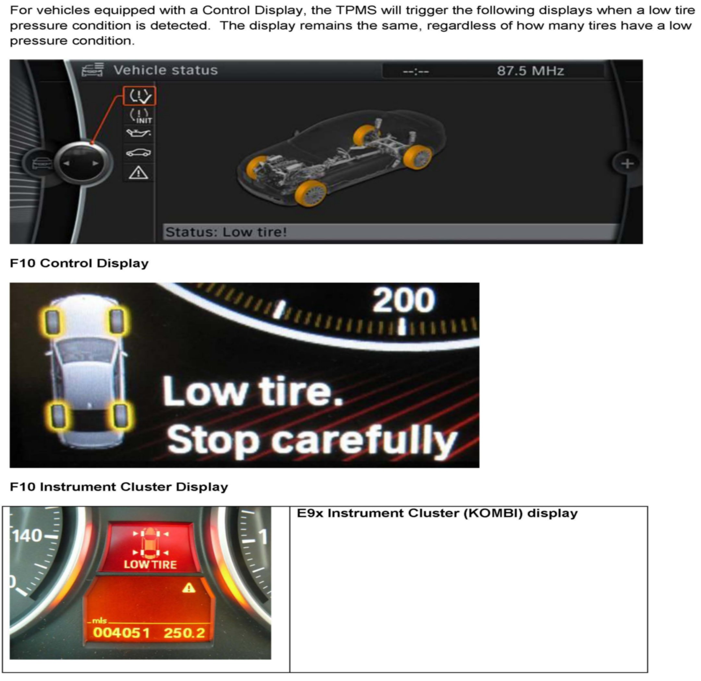

Tire Monitor System - (TPMS) Functional Changes
SI B36 02 11Wheels and Tires
August 2011
Technical Service
SUBJECT
Tire Pressure Monitor System (TPMS) Functional Changes
MODEL
All produced from July 19, 2011
INFORMATION
There has been a disruption in the production and supply chain of certain electronic components. These events have influenced global manufacturing facilities, including the automotive sector. In order to fulfill customer demand and maintain production schedules, BMW has made a change to the Tire Pressure Monitor System of certain vehicles.
Although the basic system operation and function remain the same, changes have been made to the vehicle's display elements when a low tire pressure condition occurs.
The following points apply to vehicles produced during the period listed above:
^ The Tire Pressure Monitor System continues to meet all federal requirements.
^ When a low tire pressure condition is detected, a general system warning is issued. The warning will be displayed in the instrument cluster (KOMBI) and/or Control Display, depending on the vehicle's equipment level (refer to the attachment).
^ When a driver is alerted to a low pressure condition, all four tires should be inspected for damage and proper inflation.
The system components, wheel electronics and central antennae/module are fully compatible with current replacement parts.
This functional change represents a running production change and is not a defect in materials or workmanship.
Any further changes to the system function or components will be communicated in a future bulletin.
It is imperative that all service personnel be familiar with these changes.
WARRANTY INFORMATION
This Service Information bulletin provides updated vehicle specification, technical and operational information only.
ATTACHMENTS

B360211 Procedure